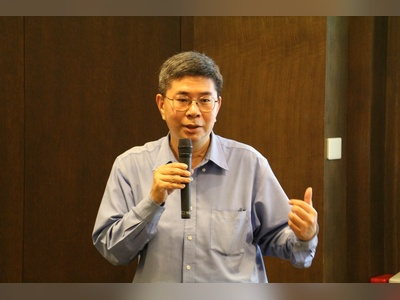
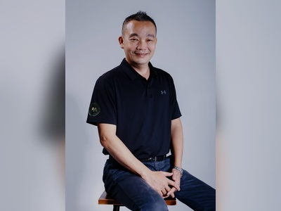

副校長

副校長 李孟晃博士
現職
- 實踐大學副校長
- 實踐大學教務長
- 實踐大學共同課程委員會主任委員
- 實踐大學資訊科技與管理學系教授
學歷
- 國立臺灣大學資訊工程博士
- 國立成功大學電機工程碩士
- 國立成功大學電機工程學士
經歷
- 實踐大學管理學院院長
- 實踐大學博雅學部主任
- 實踐大學圖資長
- 實踐大學資訊科技與管理學系主任
- 實踐大學學務長
- 實踐大學電算中心主任
- 中央研究院資訊科學研究所訪問學人
- 斐陶斐榮譽學會會員
國際暨兩岸事務副校長 郭壽旺博士
Tony Kuo, Ph.D.
Vice President for International and Cross-Strait Affairs
Shih Chien University
Profile - 郭壽旺博士（PDF）
現職
- 實踐大學國際暨兩岸事務副校長
- 實踐大學國際事務處國際長
- 實踐大學國際企業英語學位學程專任教授
學歷
- 淡江大學美國研究所博士
- 美國賓州印第安納大學國際關係碩士
- 美國賓州匹茲堡（Point Park University）新聞與傳播學系學士
經歷
- 國立臺北教育大學全球事務中心執行長
- 國立臺北教育大學學習與教學國際碩士學程主任
- 國立臺北教育大學東南亞區域管理學程副教授
- 實踐大學國際事務處國際長
- 實踐大學國際學院籌備處主任
- 實踐大學國際企業英語學位學程主任
- 喬治華盛頓大學臺灣研究中心顧問
- 美國德州奧斯汀大學訪問學者
- 財團法人季風文教基金會執行長
- 美國史汀生研究中心（智庫）訪問學者
- 實踐大學應用外語學系主任
- 實踐大學語言中心主任
- 輔仁大學歷史學系兼任助理教授
- 美國喬治華盛頓大學席格中心訪問學者

副校長兼校區主任 林保源博士
Paul Lin, Ph.D.
Vice President
Director of Kaohsiung Campus
Shih Chien University
Profile - 林保源博士（PDF）
現職
- 實踐大學副校長
- 實踐大學高雄校區校區主任
- 實踐大學休閒產業管理學系教授
學歷
- 國立屏東大學教育行政研究所教育財經與組織管理博士
- 國立臺灣師範大學運動管理碩士
- 輔仁大學體育學士
經歷
- 實踐大學高雄校區副教務長
- 實踐大學高雄校區休閒系主任
- 實踐大學高雄校區共同課程委員會副主任委員
- 實踐大學高雄校區通識教育二中心主任
- 實踐大學高雄校區休產系副教授兼體育室主任
- 實踐大學高雄校區男子、女子籃球隊教練
- 實踐大學高雄校區籃球裁判研習社指導老師